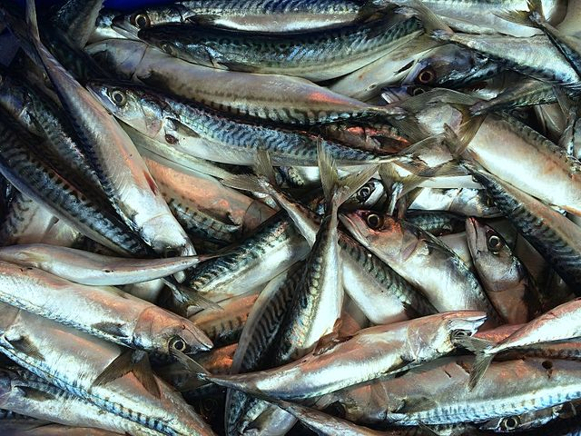
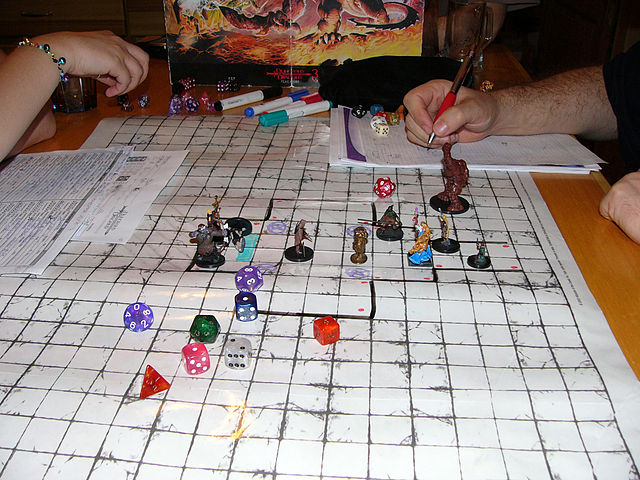
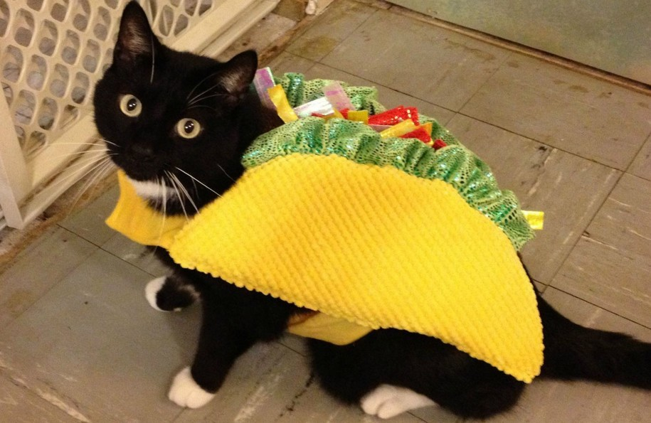
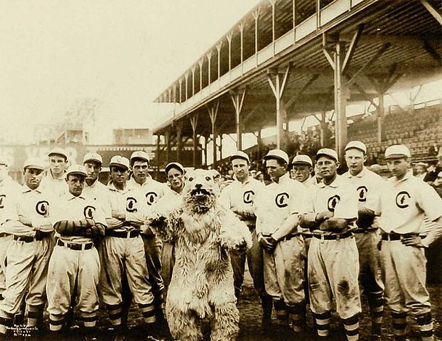
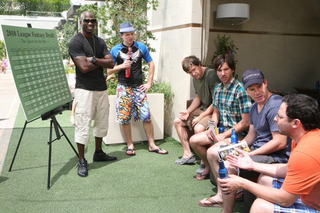
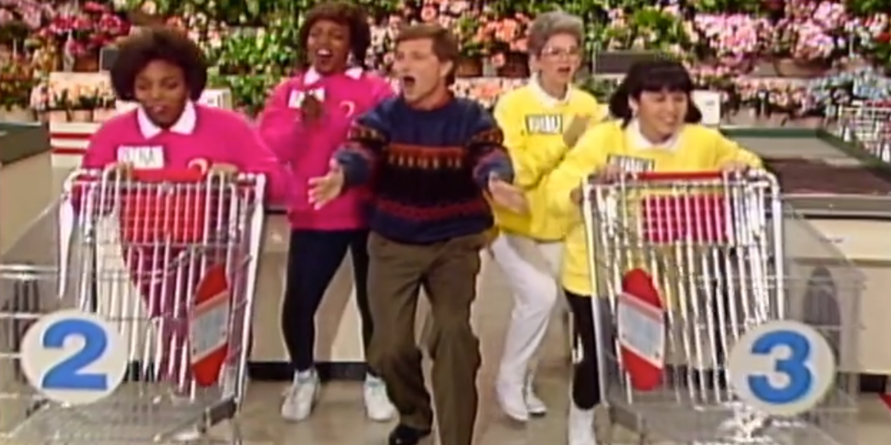
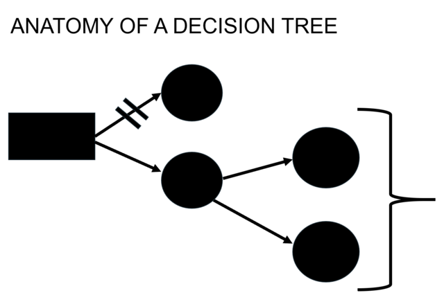
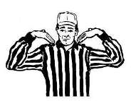

A collection of personal posts and short coding demonstrations.
Benjamin Soltoff

The recent Riddler classic offered this intriguing challenge: Ohio is the only state whose name doesnt share any letters with the word “mackerel.” Its strange, but its true.

I enjoyed the recent Riddler challenger from May 15th: The fifth edition of Dungeons & Dragons introduced a system of “advantage and disadvantage.” When you roll a die “with advantage,” you roll the die twice and keep the higher result.


This week’s Riddler Express from FiveThirtyEight: The best team in baseball this year, the Chicago Cubs, have clinched their playoff spot and will play their first playoff game a week from today.

The latest Riddler puzzle on FiveThirtyEight: A man in a trench coat approaches you and pulls an envelope from his pocket. He tells you that it contains a sum of money in bills, anywhere from $1 up to $1,000.

So the latest Riddler puzzle on FiveThirtyEight goes like this: Two players go on a hot new game show called “Higher Number Wins.” The two go into separate booths, and each presses a button, and a random number between zero and one appears…
This week’s Riddler puzzle on FiveThirtyEight features the following questions: There’s an airplane with 100 seats, and there are 100 ticketed passengers each with an assigned seat. They line up to board in some random order.
An Assessment of Precipitation’s Effect on Traffic Stops

Last week I examined how one can use logistic regression to estimate the value of a timeout, with minimal success.

On December 27, the Pittsburgh Steelers were down 13-3 against their rivals, the Baltimore Ravens, after the first half. The Ravens opened the second half with the ball, but quickly punted the ball following a three-and-out drive.
An analysis of Jeopardy! game play.